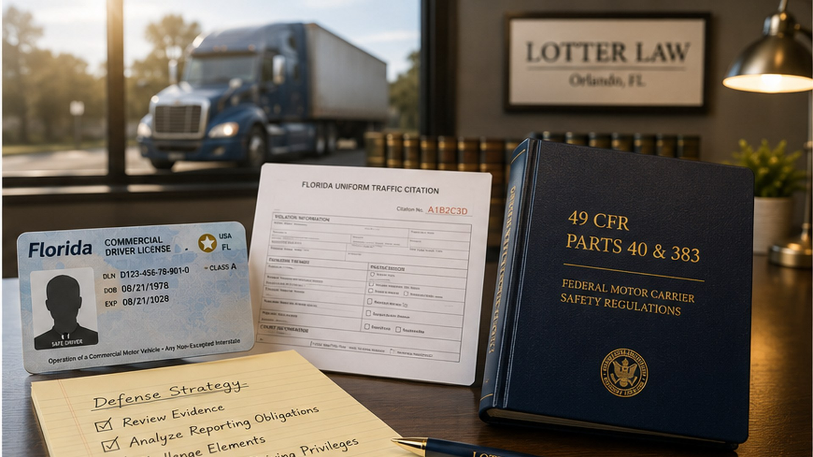
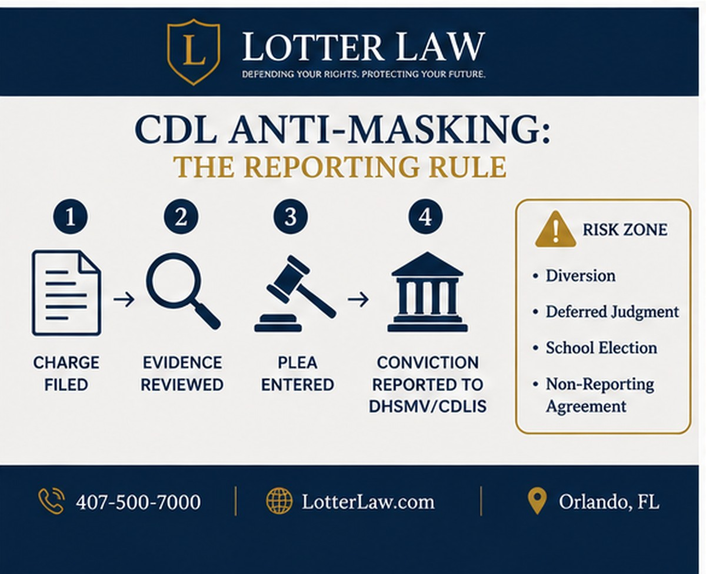
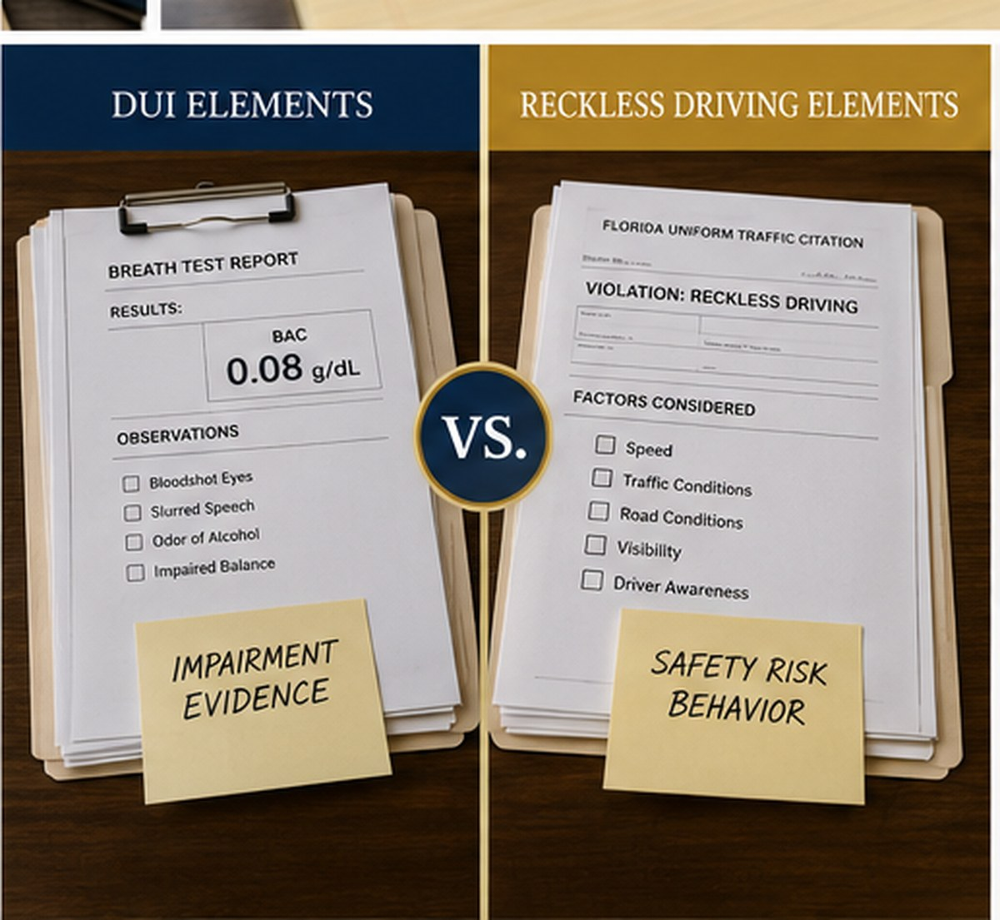

CDL Anti-Masking Follow-Up: A Reckless Plea Resolution

In an earlier article, we looked at the legal problem: does CDL anti-masking block a Florida DUI from being reduced to reckless driving? This article is the follow-up. It explains the resolution side of that problem: how an evidence-based reckless driving plea can be handled without hiding the conviction from the CDL reporting system.
The context is a real issue that can come up in court. A CDL holder faces a DUI charge. The evidence creates litigation risk. The State is willing to resolve the case to reckless driving. Then the court has to decide whether accepting that plea would violate anti-masking rules.
The answer should turn on the record. Federal law prohibits hiding a CDL-relevant conviction from the commercial driver reporting system. It does not prohibit accurate, evidence-based plea negotiations that result in a reportable conviction.
The Problem From the First Article
The federal anti-masking rule is found in 49 C.F.R. 384.226. In plain English, it says a state must not mask, defer judgment, or allow diversion in a way that prevents a CDL or commercial learner's permit holder's conviction for a traffic-control-law violation from appearing on the CDLIS driver record.
The Core Idea
The rule targets dispositions that hide a conviction from the CDL record. It does not automatically ban every plea bargain involving a CDL holder.

That distinction matters. The concern is not that a defense attorney asked for a better result. The concern is whether the result prevents the conviction that actually happened from being reported when federal law requires it to be visible.
The Resolution: Report the Conviction, Do Not Hide It
The practical resolution is to separate the plea from the reporting consequence. If the DUI evidence supports a negotiated reckless driving plea, the court can accept the plea as the conviction that is actually being entered. But the plea should not include diversion, deferral, school election, dismissal-after-compliance, or non-reporting language designed to keep the reckless driving conviction away from DHSMV or CDLIS.
That is the line we wanted the record to draw. The defense position was not that the CDL rules should be ignored. It was that the case could be resolved to the offense supported by the evidence, while allowing the clerk and licensing agencies to report and process the resulting conviction in the ordinary course.
In the case that prompted this follow-up, the judge required the State to make a record showing that accepting the reckless driving plea would not violate the CDL anti-masking rule. The State was able to do that because the pretrial motion to suppress had exposed concrete weaknesses in the DUI case: out-of-state witnesses, statements the defense argued were inadmissible, weak or non-credible standardized field sobriety test evidence, and limited observable impairment. Put on the record, those reasons showed the reduction was based on litigation risk and proof problems, not an agreement to hide a CDL conviction.
A Charge Is Not the Same Thing as a Conviction
Federal CDL law uses a broad definition of conviction. Under 49 C.F.R. 383.5, a conviction can include an accepted guilty or no-contest plea, a determination that the person violated the law, payment of a fine or court cost, or similar final disposition.
Florida also ties CDL cases to that federal definition. F.S. 322.01(11)(b) says the federal definition of conviction applies to offenses committed in a commercial motor vehicle or by a person holding a commercial driver license.
But a pending charge is still a pending charge. If a CDL holder is charged with DUI, that charge creates risk. It may affect work, licensing, administrative suspension issues, and immediate decision-making. But the criminal charge itself is not the same thing as a criminal conviction.
That is why plea negotiations still matter. The State may review the evidence, evaluate suppression issues, weigh proof problems, and offer a different resolution before trial. That is ordinary criminal litigation. The anti-masking rule should not be used to freeze the original accusation in place when the case has legitimate evidentiary or legal problems.
DUI and Reckless Driving Are Different Offenses
In Florida, DUI and reckless driving are not the same charge. DUI under F.S. 316.193 requires proof that the person drove or was in actual physical control while impaired by alcohol, a chemical substance, or a controlled substance, or that the person had an unlawful breath or blood alcohol level.
Reckless driving under F.S. 316.192 requires proof that the person drove with willful or wanton disregard for the safety of persons or property.
Why the Difference Matters
- DUI focuses on impairment, actual physical control, or an unlawful alcohol level.
- Reckless driving focuses on willful or wanton disregard for safety.
- CDL reporting focuses on the conviction that is actually entered and transmitted through the driver-record system.

A case may start as DUI, but later develop proof problems on impairment, breath testing, refusal procedure, custody, the stop, or the detention. If those problems cause the State to offer reckless driving instead of DUI, the question should not be only, "Does the driver have a CDL?"
The better question is, "Is this a real litigation-driven resolution, and will the actual conviction be reported accurately?"
Reckless Driving Can Still Matter for a CDL
A reckless driving plea is not automatically harmless for a commercial driver. Federal CDL regulations treat reckless driving as a serious traffic violation. Under 49 C.F.R. 383.51, repeat serious traffic violations within a three-year period can lead to commercial disqualification.
That is exactly why accurate reporting matters. If a CDL holder pleads to reckless driving, the defense should not ask the court to pretend nothing happened. The court should not order the clerk, DHSMV, CDLIS, or any federal reporting system to ignore the conviction.
The CDL consequences should flow from the conviction that was actually entered and reported. That is not masking. That is the opposite of masking.
The Problem With Special Treatment Pleas
The danger zone is a plea that looks like it exists only to protect the CDL record rather than to resolve the case on the evidence.
Potential Masking Concerns
- A diversion program that avoids any reportable conviction.
- A deferred judgment that keeps the violation from appearing on the CDLIS record.
- A school election that prevents points or reporting when the CDL holder is not eligible.
- A dismissal-after-compliance arrangement designed to keep a traffic-control-law conviction off the CDL record.
- A non-reporting agreement that tells the clerk or licensing agency not to report what actually happened.
Florida CDL holders are not treated the same as ordinary Class E drivers for traffic school election. FLHSMV's driver improvement guidance excludes CDL holders from electing driver improvement school to avoid points, regardless of whether the violation happened in a commercial motor vehicle.
What a CDL-Compliant Plea Should Do
A CDL-compliant resolution should be clear about what it is and what it is not. If the State offers a plea to reckless driving because of proof issues in a DUI case, the record should make clear that the result is based on litigation risk or evidentiary issues, not CDL sympathy.
A Cleaner Record Usually Shows
- The defense reviewed discovery and identified legal or factual problems.
- The State considered those issues before making or revising the offer.
- The plea creates a reportable conviction rather than a hidden disposition.
- The court is not ordering diversion, deferral, driver school, dismissal after compliance, or non-reporting.
- DHSMV and CDLIS remain free to process the record under the applicable CDL rules.
That kind of record protects both sides. It protects the CDL holder from an overbroad anti-masking objection that treats any reduction as illegal. It also protects the integrity of the CDL reporting system by making clear that nothing is being hidden.
Why the Record Matters
In an ordinary criminal traffic case, the plea colloquy may be short. In a CDL case, especially where a DUI is being reduced to reckless driving, the record matters more.
A judge may want to know whether the plea is a real evidence-based resolution or an attempt to avoid federal reporting. The defense should be ready to answer that question without overstating what the State thinks.
Often, the cleanest record is the chronology: the original charge was filed, the defense reviewed the evidence, legal or factual issues were raised, the State considered those issues, and the proposed conviction will be reported normally.
That record shows the plea is tied to the case, not just to the driver's CDL.
The Takeaway
CDL anti-masking law is real, and it should be taken seriously. But the rule is about hiding convictions. It is not a blanket ban on plea bargaining.
A CDL holder can still have defenses. A DUI charge can still have proof problems. A negotiated plea can still be appropriate when it reflects the evidence and is reported accurately.
The Practical Line
A plea that prevents a required CDL conviction from appearing on the driver record may be masking.
A plea that results in an accurately reported conviction after legitimate litigation is not the same thing.
For commercial drivers, the goal is not to pretend the CDL rules do not exist. The goal is to resolve the criminal or traffic case honestly, preserve every valid defense, and make sure the record accurately reflects what happened.
Frequently Asked Questions About CDL Anti-Masking
What does CDL anti-masking mean?
CDL anti-masking means the state cannot use a court result, diversion, deferred judgment, or similar device to keep a required CDL-related traffic conviction from appearing on the commercial driver record. The rule protects the CDLIS reporting system by making sure commercial driver convictions remain visible to licensing agencies.
Does anti-masking ban every plea bargain?
No. Anti-masking is not a blanket ban on negotiation. Prosecutors and defense lawyers still evaluate stops, searches, breath or blood evidence, refusal issues, witness problems, crash evidence, and trial risk. The problem is not negotiation itself. The problem is a disposition that hides the conviction that actually results.
Can a CDL holder's DUI be reduced to reckless driving?
It depends on the facts. DUI and reckless driving are different Florida offenses with different elements. If a DUI case has real proof problems and the State offers reckless driving because of the evidence, the anti-masking question should focus on accurate reporting. A reckless-driving conviction should not be hidden from DHSMV or CDLIS.
Why does the plea record matter?
The record helps show whether the resolution is evidence-based or merely designed to protect the CDL. A better record identifies the litigation reason for the plea, avoids non-reporting language, and confirms that the clerk and licensing agencies may process the conviction in the ordinary course.
What Commercial Drivers Should Do Before Court
Before entering any plea, a CDL holder should know how the proposed disposition will be written on the court record, whether adjudication is being withheld, what conviction will be reported, and whether the licensing consequence is separate from the criminal sentence. Those questions should be answered before the plea hearing, because a driver record problem is much harder to unwind after the clerk, DHSMV, and CDLIS have already processed the result.
A practical review should also separate the criminal-defense issues from the employment issues. The court may be focused on the charge, the sentence, and the proof. The driver may also need to think about employer notice rules, insurance underwriting, company safety policies, and future background checks. That does not mean the defense should abandon negotiation. It means the negotiation should be built on a clear record, a realistic view of the evidence, and an honest understanding of what the plea will and will not do for the commercial license.
Related Florida Defense Issues
CDL anti-masking often overlaps with other traffic and DUI issues. A driver facing a DUI should also understand how a DHSMV formal review can affect license status before the criminal case ends. A driver facing a reduced charge should understand the difference between reckless driving in Florida and ordinary traffic infractions. And when a license is already suspended, charges like DWLSR and no valid driver license can create separate criminal problems.
The common thread is simple: the courtroom result and the driver-record result are connected, but they are not always identical. A defense strategy for a CDL holder has to account for both.
Related Articles
The companion article explaining the legal problem this follow-up resolves.
First-Time Reckless Driving in FloridaWhat reckless driving means, how it differs from ordinary traffic tickets, and why the record matters.
DWLSR vs. No Valid Driver LicenseThe difference between suspended-license charges and no-valid-license charges in Florida.
Do You Have to Tell Your Employer About an Arrest?Why CDL holders and licensed professionals may face employment consequences beyond the court file.
CDL Holder Facing a DUI or Reckless Driving Charge?
If you hold a CDL, do not treat a DUI, reckless driving, speeding, crash, or refusal case like an ordinary ticket. The criminal court result, DHSMV record, CDLIS reporting, employer consequences, and possible commercial disqualification can all overlap.
Call 407-500-7000 to talk about your case.
Lotter Law reviews both sides of the problem: the courtroom defense and the driver-license consequences.
Source Notes
- Federal CDL anti-masking rule: 49 C.F.R. 384.226.
- Federal CDL conviction definition: 49 C.F.R. 383.5.
- Federal serious traffic violation and disqualification table: 49 C.F.R. 383.51.
- Florida CDL conviction definition and driver-license definitions: F.S. 322.01.
- Florida court reporting statute: F.S. 322.25.
- Florida reckless driving statute: F.S. 316.192.
- Florida DUI statute: F.S. 316.193.
- FLHSMV driver improvement guidance excluding CDL holders from school election to avoid points.